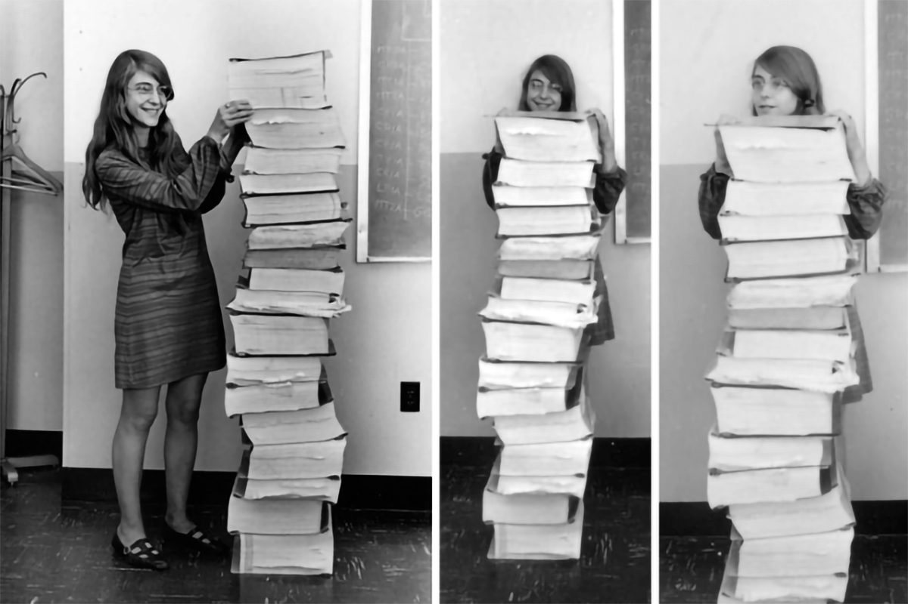

Hija de Ruth Esther Partington y Kenneth Heafield,11 fue educada en un ambiente familiar con un padre filósofo-poeta y abuelo pastor
cuáquero que la alentó a estudiar y a ser lo que ella quería ser. Conoció a su marido (del cual se divorció más tarde)13 James Cox Hamilton mientras
estudiaba en Earlham College y se casaron a finales de los años 1950 después de obtener su licenciatura.
Tienen una hija llamada Lauren.
Tras licenciarse en Matemáticas, quiso seguir estudiando, pero tuvo que dejar sus estudios durante un periodo de tiempo para que su marido
terminara su carrera en Harvard, y trabajar de profesora de matemáticas y francés en un instituto.
-Vida personal-
Margaret Elaine Heafield nació en Paoli, Indiana el día 17 de agosto de 1936. Hija de Kenneth Heafield y Ruth Esther Heafield, que tuvieron otros dos hijos posteriormente: David1516 y Kathryn17.
Tras mudarse con su familia a Michigan, Margaret finalizó los estudios en el instituto Hancock High School en el año 1954. Estudió matemáticas en la Universidad de Michigan en el año 1955, antes de cambiarse a Earlham College, donde su madre estudiada.
Allí obtuvo el grado en matemáticas con filisofía en el año 1958. Citó a Florence Long, el director del departamento de matemáticas en Earlham como ayuda en su deseo de investigar en las matemáticas abstractas y convertirse en profesora de matemáticas.
Otras de sus inspiraciones fueron su padre (filósofo y poeta) y su abuelo (director de instituto y ministro de Sociedad Religiosa de los Amigos), por incluir aspectos e intereses filosóficos en sus estudios.
En Earlham, Margaret conoció a su primer marido, James Cox Hamilton20, que terminaba sus estudios de química. Se casaron el 15 de junio de 1958, una vez Margaret se había graduado en Earlham2.
Trabajó una temporada como profesora de matemáticas y francés en un colegio público en Boston, Indiana, hasta que su marido se graduó23.
Se mudaron a Boston, Massachusetts, donde James continuó sus estudios de postgrado en química en la Universidad de Brandeis.
Tuvieron una hija llamada Lauren el 10 de noviembre de 1959. Finalmente, la pareja se divorció en 1967. Dos años después, Margaret se casaría con Dan Lickly
-Trabajo en el MIT-
De 1961 a 1963, trabajó en el MIT en un proyecto de seguimiento de trayectorias de aeronaves desconocidas.
También escribió un programa para el Laboratorio de Investigación Cambridge, de la Fuerza Aérea.
Para este Laboratorio, desarrolló códigos de nuevas rutinas de programación.
El contenido de los programas se imprimía en «papel continuo» y se guardaban en carpetas voluminosas.
El significado de esos códigos casi misteriosos, estaba al alcance de muy pocos. En el MIT, Margaret Hamilton formaba parte del personal del Laboratorio Draper,
fundado en 1932 por el Dr. Charles Stark Draper.
-Operacion Apolo
En 1965, Margaret fue nombrada responsable del desarrollo del software de vuelo de las computadoras que irían a bordo de las naves Apolo.
Posteriormente dirigió y supervisó los desarrollos de la misión de la estación espacial Skylab.
Margaret Hamilton no tuvo problemas para conciliar su carrera en la NASA con sus funciones de madre.
Durante los fines de semana llevaba a su hija Lauren al laboratorio para que pasara el tiempo con ella, mientras trabajaba escribiendo las rutinas de computación
que irían en la computadora del módulo de comando del Apolo.
Idear, escribir, probar y comprobar estas rutinas, fue algo bastante meritorio. Además de requerir un conocimiento profundo de los computadores,
no fue nada fácil escribir algo más de 400.000 líneas de código que iban insertadas en el sistema operativo del módulo lunar en las misiones Apolo.
Ella sabía “todo” de estos vitales programas.
Muestra del codigo escrito por Margaret para la operacion Apolo

-Trabajos de Margaret Hamilton-
Algunas publicaciones reseñables
"Software de orden superior: una metodología para definir el software", 1976
"Desarrollo interior antes del hecho, 1994
"Unidad de navegación de guía profundamente integrada (DI-GNU) Principios comunes de la arquitectura de software", 2004
"Lenguaje de sistemas universales para la ingeniería de sistemas preventivos", 2007
"Una semántica de sistemas universales formales para SysML", 2007